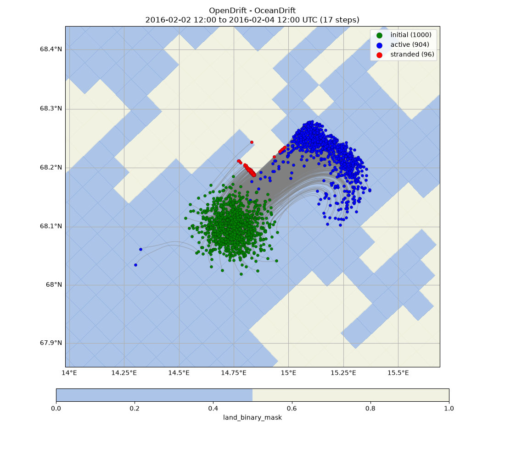
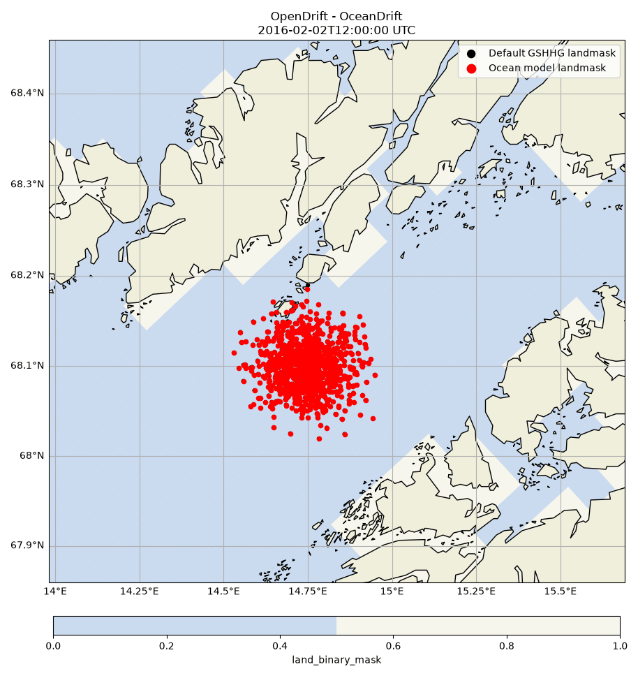
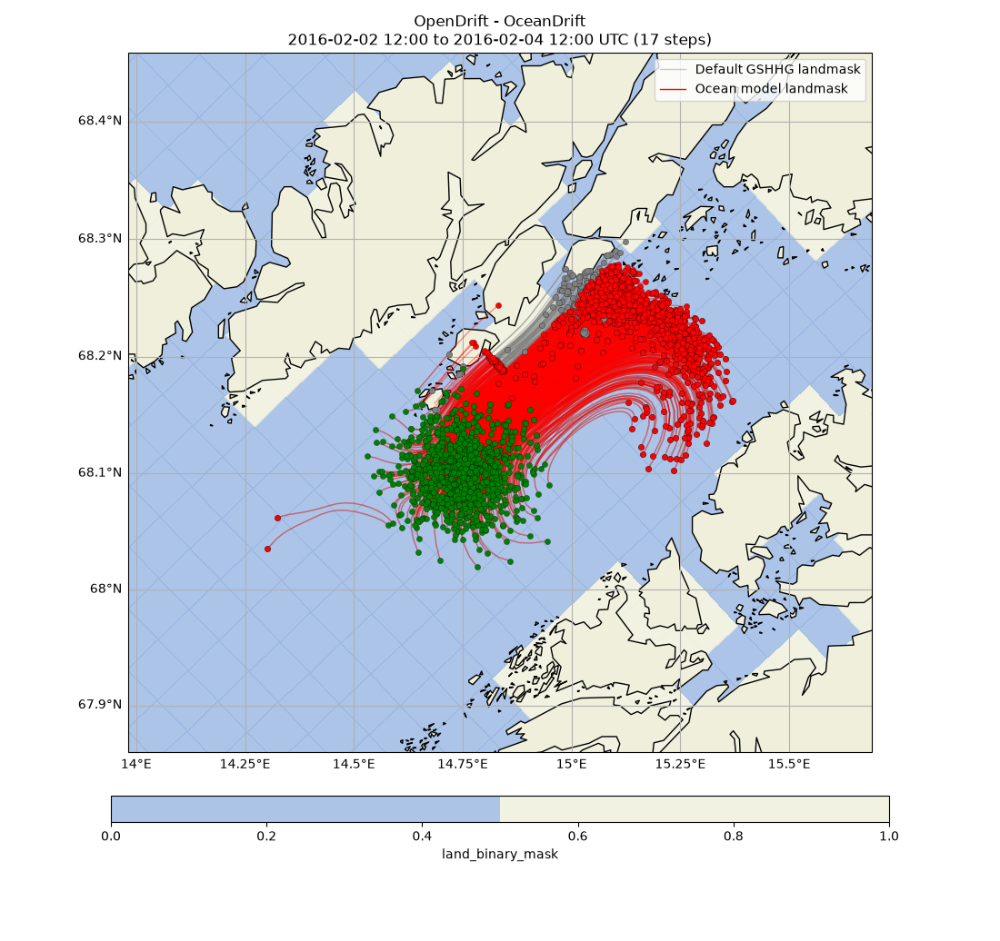

Note
Go to the end to download the full example code.
Model landmask
Comparing two simulation runs, with landmask from ocean model and GSHHG
from datetime import timedelta
from opendrift import test_data_folder as tdf
from opendrift.readers import reader_ROMS_native
from opendrift.models.oceandrift import OceanDrift
lon = 14.75; lat = 68.1
o = OceanDrift(loglevel=20)
reader_nordic = reader_ROMS_native.Reader(tdf +
'2Feb2016_Nordic_sigma_3d/Nordic-4km_SLEVELS_avg_00_subset2Feb2016.nc')
12:19:41 INFO opendrift:569: OpenDriftSimulation initialised (version 1.14.11 / v1.14.12-45-g2e494c3)
12:19:41 INFO opendrift.readers:67: Opening file with xr.open_dataset
12:19:42 WARNING opendrift.readers.reader_ROMS_native:305: Duplicate variables for land_binary_mask, selecting mask_psi, and discarding mask_rho
12:19:42 WARNING opendrift.readers.reader_ROMS_native:305: Duplicate variables for latitude, selecting lat_psi, and discarding lat_rho
12:19:42 WARNING opendrift.readers.reader_ROMS_native:305: Duplicate variables for latitude, selecting lat_psi, and discarding lat_u
12:19:42 WARNING opendrift.readers.reader_ROMS_native:305: Duplicate variables for latitude, selecting lat_psi, and discarding lat_v
12:19:42 WARNING opendrift.readers.reader_ROMS_native:305: Duplicate variables for longitude, selecting lon_psi, and discarding lon_rho
12:19:42 WARNING opendrift.readers.reader_ROMS_native:305: Duplicate variables for longitude, selecting lon_psi, and discarding lon_u
12:19:42 WARNING opendrift.readers.reader_ROMS_native:305: Duplicate variables for longitude, selecting lon_psi, and discarding lon_v
12:19:42 WARNING opendrift.readers.reader_ROMS_native:305: Duplicate variables for ocean_s_coordinate_g2, selecting s_rho, and discarding s_w
12:19:42 INFO opendrift.readers.reader_ROMS_native:312: The following variables without standard_name are discarded: ['AICEnudass', 'Akk_bak', 'Akp_bak', 'Akt_bak', 'Akv_bak', 'Charnok_alpha', 'CrgBan_cw', 'Cs_r', 'Cs_w', 'FSobc_in', 'FSobc_out', 'Falpha', 'Fbeta', 'Fgamma', 'LtracerSrc', 'M2nudg', 'M2obc_in', 'M2obc_out', 'M3nudg', 'M3obc_in', 'M3obc_out', 'Tcline', 'Tnudg', 'Tobc_in', 'Tobc_out', 'Vstretching', 'Vtransform', 'Znudg', 'Zob', 'Zos', 'Zos_hsig_alpha', 'angle', 'dstart', 'dt', 'dtfast', 'el', 'f', 'gamma2', 'gls_Kmin', 'gls_Pmin', 'gls_c1', 'gls_c2', 'gls_c3m', 'gls_c3p', 'gls_cmu0', 'gls_m', 'gls_n', 'gls_p', 'gls_sigk', 'gls_sigp', 'hc', 'mask_u', 'mask_v', 'nAVG', 'nHIS', 'nRST', 'nSTA', 'ndefAVG', 'ndefHIS', 'ndtfast', 'ntimes', 'ntsAVG', 'pm', 'pn', 'rdrg', 'rdrg2', 'rho0', 'spherical', 'swrad', 'sz_alpha', 'theta_b', 'theta_s', 'ubar', 'vbar', 'xl', 'zeta_detided', 'ocean_time']
12:19:42 WARNING opendrift.readers.basereader.structured:50: No proj string or projection could be derived for reader roms native, using 'fakeproj'.
12:19:42 INFO opendrift.readers.basereader.structured:88: Making interpolator for lon,lat to x,y conversion...
First run, with default GSHHG vector landmask
o.add_reader([reader_nordic])
time = reader_nordic.start_time
o.set_config('general:use_auto_landmask', True)
o.seed_elements(lon, lat, radius=3000, number=1000, time=time)
o.run(end_time=reader_nordic.end_time, time_step=1800, time_step_output=3*3600)
12:19:42 INFO opendrift.models.basemodel.environment:203: Adding a global landmask from GSHHG
12:19:50 INFO opendrift.models.basemodel.environment:227: Fallback values will be used for the following variables which have no readers:
12:19:50 INFO opendrift.models.basemodel.environment:230: x_wind: 0.000000
12:19:50 INFO opendrift.models.basemodel.environment:230: y_wind: 0.000000
12:19:50 INFO opendrift.models.basemodel.environment:230: upward_sea_water_velocity: 0.000000
12:19:50 INFO opendrift.models.basemodel.environment:230: ocean_vertical_diffusivity: 0.000000
12:19:50 INFO opendrift.models.basemodel.environment:230: horizontal_diffusivity: 0.000000
12:19:50 INFO opendrift.models.basemodel.environment:230: sea_surface_wave_significant_height: 0.000000
12:19:50 INFO opendrift.models.basemodel.environment:230: sea_surface_wave_stokes_drift_x_velocity: 0.000000
12:19:50 INFO opendrift.models.basemodel.environment:230: sea_surface_wave_stokes_drift_y_velocity: 0.000000
12:19:50 INFO opendrift.models.basemodel.environment:230: ocean_mixed_layer_thickness: 50.000000
12:19:50 INFO opendrift:1910: Skipping environment variable ocean_vertical_diffusivity because of condition ['drift:vertical_mixing', 'is', False]
12:19:50 INFO opendrift:1910: Skipping environment variable ocean_mixed_layer_thickness because of condition ['drift:vertical_mixing', 'is', False]
12:19:50 INFO opendrift:1921: Storing previous values of element property lon because of condition (('general:coastline_action', 'in', ['stranding', 'previous']), 'or', ('general:seafloor_action', 'in', ['previous']))
12:19:50 INFO opendrift:1921: Storing previous values of element property lat because of condition (('general:coastline_action', 'in', ['stranding', 'previous']), 'or', ('general:seafloor_action', 'in', ['previous']))
12:19:50 INFO opendrift:1929: Storing previous values of environment variable sea_surface_height because of condition ['drift:vertical_advection', 'is', True]
12:19:50 INFO opendrift:958: Using existing reader for land_binary_mask to move elements to ocean
12:19:50 INFO opendrift:991: Moving 3 out of 1000 points from land to water
12:19:50 INFO opendrift:2237: 2016-02-02 12:00:00 - step 1 of 96 - 1000 active elements (0 deactivated)
12:19:50 INFO opendrift.readers.reader_ROMS_native:362: Using mask_rho for mask_rho
12:19:50 INFO opendrift.readers.reader_ROMS_native:383: Using mask_u for mask_u
12:19:50 INFO opendrift.readers.reader_ROMS_native:404: Using mask_v for mask_v
12:19:50 INFO opendrift.readers.reader_ROMS_native:427: Using angle from Dataset.
12:19:51 INFO opendrift:2237: 2016-02-02 12:30:00 - step 2 of 96 - 1000 active elements (0 deactivated)
12:19:51 INFO opendrift:2237: 2016-02-02 13:00:00 - step 3 of 96 - 996 active elements (4 deactivated)
12:19:51 INFO opendrift:2237: 2016-02-02 13:30:00 - step 4 of 96 - 995 active elements (5 deactivated)
12:19:51 INFO opendrift:2237: 2016-02-02 14:00:00 - step 5 of 96 - 995 active elements (5 deactivated)
12:19:51 INFO opendrift:2237: 2016-02-02 14:30:00 - step 6 of 96 - 994 active elements (6 deactivated)
12:19:51 INFO opendrift:2237: 2016-02-02 15:00:00 - step 7 of 96 - 994 active elements (6 deactivated)
12:19:51 INFO opendrift:2237: 2016-02-02 15:30:00 - step 8 of 96 - 993 active elements (7 deactivated)
12:19:51 INFO opendrift:2237: 2016-02-02 16:00:00 - step 9 of 96 - 992 active elements (8 deactivated)
12:19:51 INFO opendrift:2237: 2016-02-02 16:30:00 - step 10 of 96 - 992 active elements (8 deactivated)
12:19:51 INFO opendrift:2237: 2016-02-02 17:00:00 - step 11 of 96 - 992 active elements (8 deactivated)
12:19:51 INFO opendrift:2237: 2016-02-02 17:30:00 - step 12 of 96 - 989 active elements (11 deactivated)
12:19:51 INFO opendrift:2237: 2016-02-02 18:00:00 - step 13 of 96 - 988 active elements (12 deactivated)
12:19:51 INFO opendrift:2237: 2016-02-02 18:30:00 - step 14 of 96 - 988 active elements (12 deactivated)
12:19:51 INFO opendrift:2237: 2016-02-02 19:00:00 - step 15 of 96 - 988 active elements (12 deactivated)
12:19:51 INFO opendrift:2237: 2016-02-02 19:30:00 - step 16 of 96 - 987 active elements (13 deactivated)
12:19:51 INFO opendrift:2237: 2016-02-02 20:00:00 - step 17 of 96 - 986 active elements (14 deactivated)
12:19:51 INFO opendrift:2237: 2016-02-02 20:30:00 - step 18 of 96 - 986 active elements (14 deactivated)
12:19:51 INFO opendrift:2237: 2016-02-02 21:00:00 - step 19 of 96 - 986 active elements (14 deactivated)
12:19:51 INFO opendrift:2237: 2016-02-02 21:30:00 - step 20 of 96 - 986 active elements (14 deactivated)
12:19:51 INFO opendrift:2237: 2016-02-02 22:00:00 - step 21 of 96 - 986 active elements (14 deactivated)
12:19:51 INFO opendrift:2237: 2016-02-02 22:30:00 - step 22 of 96 - 986 active elements (14 deactivated)
12:19:51 INFO opendrift:2237: 2016-02-02 23:00:00 - step 23 of 96 - 986 active elements (14 deactivated)
12:19:51 INFO opendrift:2237: 2016-02-02 23:30:00 - step 24 of 96 - 986 active elements (14 deactivated)
12:19:51 INFO opendrift:2237: 2016-02-03 00:00:00 - step 25 of 96 - 986 active elements (14 deactivated)
12:19:51 INFO opendrift:2237: 2016-02-03 00:30:00 - step 26 of 96 - 986 active elements (14 deactivated)
12:19:51 INFO opendrift:2237: 2016-02-03 01:00:00 - step 27 of 96 - 986 active elements (14 deactivated)
12:19:51 INFO opendrift:2237: 2016-02-03 01:30:00 - step 28 of 96 - 986 active elements (14 deactivated)
12:19:51 INFO opendrift:2237: 2016-02-03 02:00:00 - step 29 of 96 - 986 active elements (14 deactivated)
12:19:51 INFO opendrift:2237: 2016-02-03 02:30:00 - step 30 of 96 - 986 active elements (14 deactivated)
12:19:51 INFO opendrift:2237: 2016-02-03 03:00:00 - step 31 of 96 - 986 active elements (14 deactivated)
12:19:52 INFO opendrift:2237: 2016-02-03 03:30:00 - step 32 of 96 - 986 active elements (14 deactivated)
12:19:52 INFO opendrift:2237: 2016-02-03 04:00:00 - step 33 of 96 - 986 active elements (14 deactivated)
12:19:52 INFO opendrift:2237: 2016-02-03 04:30:00 - step 34 of 96 - 986 active elements (14 deactivated)
12:19:52 INFO opendrift:2237: 2016-02-03 05:00:00 - step 35 of 96 - 986 active elements (14 deactivated)
12:19:52 INFO opendrift:2237: 2016-02-03 05:30:00 - step 36 of 96 - 986 active elements (14 deactivated)
12:19:52 INFO opendrift:2237: 2016-02-03 06:00:00 - step 37 of 96 - 986 active elements (14 deactivated)
12:19:52 INFO opendrift:2237: 2016-02-03 06:30:00 - step 38 of 96 - 986 active elements (14 deactivated)
12:19:52 INFO opendrift:2237: 2016-02-03 07:00:00 - step 39 of 96 - 986 active elements (14 deactivated)
12:19:52 INFO opendrift:2237: 2016-02-03 07:30:00 - step 40 of 96 - 986 active elements (14 deactivated)
12:19:52 INFO opendrift:2237: 2016-02-03 08:00:00 - step 41 of 96 - 986 active elements (14 deactivated)
12:19:52 INFO opendrift:2237: 2016-02-03 08:30:00 - step 42 of 96 - 985 active elements (15 deactivated)
12:19:52 INFO opendrift:2237: 2016-02-03 09:00:00 - step 43 of 96 - 985 active elements (15 deactivated)
12:19:52 INFO opendrift:2237: 2016-02-03 09:30:00 - step 44 of 96 - 984 active elements (16 deactivated)
12:19:52 INFO opendrift:2237: 2016-02-03 10:00:00 - step 45 of 96 - 984 active elements (16 deactivated)
12:19:52 INFO opendrift:2237: 2016-02-03 10:30:00 - step 46 of 96 - 982 active elements (18 deactivated)
12:19:52 INFO opendrift:2237: 2016-02-03 11:00:00 - step 47 of 96 - 982 active elements (18 deactivated)
12:19:52 INFO opendrift:2237: 2016-02-03 11:30:00 - step 48 of 96 - 980 active elements (20 deactivated)
12:19:52 INFO opendrift:2237: 2016-02-03 12:00:00 - step 49 of 96 - 979 active elements (21 deactivated)
12:19:52 INFO opendrift:2237: 2016-02-03 12:30:00 - step 50 of 96 - 977 active elements (23 deactivated)
12:19:52 INFO opendrift:2237: 2016-02-03 13:00:00 - step 51 of 96 - 976 active elements (24 deactivated)
12:19:52 INFO opendrift:2237: 2016-02-03 13:30:00 - step 52 of 96 - 975 active elements (25 deactivated)
12:19:52 INFO opendrift:2237: 2016-02-03 14:00:00 - step 53 of 96 - 975 active elements (25 deactivated)
12:19:52 INFO opendrift:2237: 2016-02-03 14:30:00 - step 54 of 96 - 975 active elements (25 deactivated)
12:19:52 INFO opendrift:2237: 2016-02-03 15:00:00 - step 55 of 96 - 974 active elements (26 deactivated)
12:19:52 INFO opendrift:2237: 2016-02-03 15:30:00 - step 56 of 96 - 971 active elements (29 deactivated)
12:19:52 INFO opendrift:2237: 2016-02-03 16:00:00 - step 57 of 96 - 969 active elements (31 deactivated)
12:19:52 INFO opendrift:2237: 2016-02-03 16:30:00 - step 58 of 96 - 964 active elements (36 deactivated)
12:19:52 INFO opendrift:2237: 2016-02-03 17:00:00 - step 59 of 96 - 958 active elements (42 deactivated)
12:19:52 INFO opendrift:2237: 2016-02-03 17:30:00 - step 60 of 96 - 956 active elements (44 deactivated)
12:19:52 INFO opendrift:2237: 2016-02-03 18:00:00 - step 61 of 96 - 953 active elements (47 deactivated)
12:19:53 INFO opendrift:2237: 2016-02-03 18:30:00 - step 62 of 96 - 945 active elements (55 deactivated)
12:19:53 INFO opendrift:2237: 2016-02-03 19:00:00 - step 63 of 96 - 942 active elements (58 deactivated)
12:19:53 INFO opendrift:2237: 2016-02-03 19:30:00 - step 64 of 96 - 939 active elements (61 deactivated)
12:19:53 INFO opendrift:2237: 2016-02-03 20:00:00 - step 65 of 96 - 935 active elements (65 deactivated)
12:19:53 INFO opendrift:2237: 2016-02-03 20:30:00 - step 66 of 96 - 931 active elements (69 deactivated)
12:19:53 INFO opendrift:2237: 2016-02-03 21:00:00 - step 67 of 96 - 930 active elements (70 deactivated)
12:19:53 INFO opendrift:2237: 2016-02-03 21:30:00 - step 68 of 96 - 928 active elements (72 deactivated)
12:19:53 INFO opendrift:2237: 2016-02-03 22:00:00 - step 69 of 96 - 924 active elements (76 deactivated)
12:19:53 INFO opendrift:2237: 2016-02-03 22:30:00 - step 70 of 96 - 918 active elements (82 deactivated)
12:19:53 INFO opendrift:2237: 2016-02-03 23:00:00 - step 71 of 96 - 913 active elements (87 deactivated)
12:19:53 INFO opendrift:2237: 2016-02-03 23:30:00 - step 72 of 96 - 908 active elements (92 deactivated)
12:19:53 INFO opendrift:2237: 2016-02-04 00:00:00 - step 73 of 96 - 899 active elements (101 deactivated)
12:19:53 INFO opendrift:2237: 2016-02-04 00:30:00 - step 74 of 96 - 890 active elements (110 deactivated)
12:19:53 INFO opendrift:2237: 2016-02-04 01:00:00 - step 75 of 96 - 882 active elements (118 deactivated)
12:19:53 INFO opendrift:2237: 2016-02-04 01:30:00 - step 76 of 96 - 877 active elements (123 deactivated)
12:19:53 INFO opendrift:2237: 2016-02-04 02:00:00 - step 77 of 96 - 870 active elements (130 deactivated)
12:19:53 INFO opendrift:2237: 2016-02-04 02:30:00 - step 78 of 96 - 863 active elements (137 deactivated)
12:19:53 INFO opendrift:2237: 2016-02-04 03:00:00 - step 79 of 96 - 859 active elements (141 deactivated)
12:19:53 INFO opendrift:2237: 2016-02-04 03:30:00 - step 80 of 96 - 847 active elements (153 deactivated)
12:19:53 INFO opendrift:2237: 2016-02-04 04:00:00 - step 81 of 96 - 845 active elements (155 deactivated)
12:19:53 INFO opendrift:2237: 2016-02-04 04:30:00 - step 82 of 96 - 840 active elements (160 deactivated)
12:19:53 INFO opendrift:2237: 2016-02-04 05:00:00 - step 83 of 96 - 833 active elements (167 deactivated)
12:19:54 INFO opendrift:2237: 2016-02-04 05:30:00 - step 84 of 96 - 823 active elements (177 deactivated)
12:19:54 INFO opendrift:2237: 2016-02-04 06:00:00 - step 85 of 96 - 810 active elements (190 deactivated)
12:19:54 INFO opendrift:2237: 2016-02-04 06:30:00 - step 86 of 96 - 799 active elements (201 deactivated)
12:19:54 INFO opendrift:2237: 2016-02-04 07:00:00 - step 87 of 96 - 789 active elements (211 deactivated)
12:19:54 INFO opendrift:2237: 2016-02-04 07:30:00 - step 88 of 96 - 777 active elements (223 deactivated)
12:19:54 INFO opendrift:2237: 2016-02-04 08:00:00 - step 89 of 96 - 772 active elements (228 deactivated)
12:19:54 INFO opendrift:2237: 2016-02-04 08:30:00 - step 90 of 96 - 757 active elements (243 deactivated)
12:19:54 INFO opendrift:2237: 2016-02-04 09:00:00 - step 91 of 96 - 751 active elements (249 deactivated)
12:19:54 INFO opendrift:2237: 2016-02-04 09:30:00 - step 92 of 96 - 747 active elements (253 deactivated)
12:19:54 INFO opendrift:2237: 2016-02-04 10:00:00 - step 93 of 96 - 740 active elements (260 deactivated)
12:19:54 INFO opendrift:2237: 2016-02-04 10:30:00 - step 94 of 96 - 738 active elements (262 deactivated)
12:19:54 INFO opendrift:2237: 2016-02-04 11:00:00 - step 95 of 96 - 731 active elements (269 deactivated)
12:19:54 INFO opendrift:2237: 2016-02-04 11:30:00 - step 96 of 96 - 723 active elements (277 deactivated)
Second run, with landmask from ocean model
o2 = OceanDrift(loglevel=20)
o2.add_reader([reader_nordic])
lon = 14.75; lat = 68.1
o2.set_config('general:use_auto_landmask', False)
o2.seed_elements(lon, lat, radius=3000, number=1000, time=time)
o2.run(end_time=reader_nordic.end_time, time_step=1800, time_step_output=3*3600)
12:19:54 INFO opendrift:569: OpenDriftSimulation initialised (version 1.14.11 / v1.14.12-45-g2e494c3)
12:19:54 INFO opendrift.models.basemodel.environment:227: Fallback values will be used for the following variables which have no readers:
12:19:54 INFO opendrift.models.basemodel.environment:230: x_wind: 0.000000
12:19:54 INFO opendrift.models.basemodel.environment:230: y_wind: 0.000000
12:19:54 INFO opendrift.models.basemodel.environment:230: upward_sea_water_velocity: 0.000000
12:19:54 INFO opendrift.models.basemodel.environment:230: ocean_vertical_diffusivity: 0.000000
12:19:54 INFO opendrift.models.basemodel.environment:230: horizontal_diffusivity: 0.000000
12:19:54 INFO opendrift.models.basemodel.environment:230: sea_surface_wave_significant_height: 0.000000
12:19:54 INFO opendrift.models.basemodel.environment:230: sea_surface_wave_stokes_drift_x_velocity: 0.000000
12:19:54 INFO opendrift.models.basemodel.environment:230: sea_surface_wave_stokes_drift_y_velocity: 0.000000
12:19:54 INFO opendrift.models.basemodel.environment:230: ocean_mixed_layer_thickness: 50.000000
12:19:54 INFO opendrift:1910: Skipping environment variable ocean_vertical_diffusivity because of condition ['drift:vertical_mixing', 'is', False]
12:19:54 INFO opendrift:1910: Skipping environment variable ocean_mixed_layer_thickness because of condition ['drift:vertical_mixing', 'is', False]
12:19:54 INFO opendrift:1921: Storing previous values of element property lon because of condition (('general:coastline_action', 'in', ['stranding', 'previous']), 'or', ('general:seafloor_action', 'in', ['previous']))
12:19:54 INFO opendrift:1921: Storing previous values of element property lat because of condition (('general:coastline_action', 'in', ['stranding', 'previous']), 'or', ('general:seafloor_action', 'in', ['previous']))
12:19:54 INFO opendrift:1929: Storing previous values of environment variable sea_surface_height because of condition ['drift:vertical_advection', 'is', True]
12:19:54 INFO opendrift:958: Using existing reader for land_binary_mask to move elements to ocean
12:19:54 INFO opendrift:989: All points are in ocean
12:19:54 INFO opendrift:2237: 2016-02-02 12:00:00 - step 1 of 96 - 1000 active elements (0 deactivated)
12:19:54 INFO opendrift:2237: 2016-02-02 12:30:00 - step 2 of 96 - 1000 active elements (0 deactivated)
12:19:54 INFO opendrift:2237: 2016-02-02 13:00:00 - step 3 of 96 - 1000 active elements (0 deactivated)
12:19:54 INFO opendrift:2237: 2016-02-02 13:30:00 - step 4 of 96 - 1000 active elements (0 deactivated)
12:19:54 INFO opendrift:2237: 2016-02-02 14:00:00 - step 5 of 96 - 1000 active elements (0 deactivated)
12:19:54 INFO opendrift:2237: 2016-02-02 14:30:00 - step 6 of 96 - 1000 active elements (0 deactivated)
12:19:54 INFO opendrift:2237: 2016-02-02 15:00:00 - step 7 of 96 - 1000 active elements (0 deactivated)
12:19:54 INFO opendrift:2237: 2016-02-02 15:30:00 - step 8 of 96 - 1000 active elements (0 deactivated)
12:19:54 INFO opendrift:2237: 2016-02-02 16:00:00 - step 9 of 96 - 999 active elements (1 deactivated)
12:19:54 INFO opendrift:2237: 2016-02-02 16:30:00 - step 10 of 96 - 999 active elements (1 deactivated)
12:19:55 INFO opendrift:2237: 2016-02-02 17:00:00 - step 11 of 96 - 999 active elements (1 deactivated)
12:19:55 INFO opendrift:2237: 2016-02-02 17:30:00 - step 12 of 96 - 998 active elements (2 deactivated)
12:19:55 INFO opendrift:2237: 2016-02-02 18:00:00 - step 13 of 96 - 998 active elements (2 deactivated)
12:19:55 INFO opendrift:2237: 2016-02-02 18:30:00 - step 14 of 96 - 996 active elements (4 deactivated)
12:19:55 INFO opendrift:2237: 2016-02-02 19:00:00 - step 15 of 96 - 995 active elements (5 deactivated)
12:19:55 INFO opendrift:2237: 2016-02-02 19:30:00 - step 16 of 96 - 994 active elements (6 deactivated)
12:19:55 INFO opendrift:2237: 2016-02-02 20:00:00 - step 17 of 96 - 992 active elements (8 deactivated)
12:19:55 INFO opendrift:2237: 2016-02-02 20:30:00 - step 18 of 96 - 990 active elements (10 deactivated)
12:19:55 INFO opendrift:2237: 2016-02-02 21:00:00 - step 19 of 96 - 989 active elements (11 deactivated)
12:19:55 INFO opendrift:2237: 2016-02-02 21:30:00 - step 20 of 96 - 988 active elements (12 deactivated)
12:19:55 INFO opendrift:2237: 2016-02-02 22:00:00 - step 21 of 96 - 986 active elements (14 deactivated)
12:19:55 INFO opendrift:2237: 2016-02-02 22:30:00 - step 22 of 96 - 986 active elements (14 deactivated)
12:19:55 INFO opendrift:2237: 2016-02-02 23:00:00 - step 23 of 96 - 985 active elements (15 deactivated)
12:19:55 INFO opendrift:2237: 2016-02-02 23:30:00 - step 24 of 96 - 981 active elements (19 deactivated)
12:19:55 INFO opendrift:2237: 2016-02-03 00:00:00 - step 25 of 96 - 979 active elements (21 deactivated)
12:19:55 INFO opendrift:2237: 2016-02-03 00:30:00 - step 26 of 96 - 977 active elements (23 deactivated)
12:19:55 INFO opendrift:2237: 2016-02-03 01:00:00 - step 27 of 96 - 972 active elements (28 deactivated)
12:19:55 INFO opendrift:2237: 2016-02-03 01:30:00 - step 28 of 96 - 971 active elements (29 deactivated)
12:19:55 INFO opendrift:2237: 2016-02-03 02:00:00 - step 29 of 96 - 966 active elements (34 deactivated)
12:19:55 INFO opendrift:2237: 2016-02-03 02:30:00 - step 30 of 96 - 964 active elements (36 deactivated)
12:19:55 INFO opendrift:2237: 2016-02-03 03:00:00 - step 31 of 96 - 964 active elements (36 deactivated)
12:19:55 INFO opendrift:2237: 2016-02-03 03:30:00 - step 32 of 96 - 963 active elements (37 deactivated)
12:19:55 INFO opendrift:2237: 2016-02-03 04:00:00 - step 33 of 96 - 961 active elements (39 deactivated)
12:19:56 INFO opendrift:2237: 2016-02-03 04:30:00 - step 34 of 96 - 960 active elements (40 deactivated)
12:19:56 INFO opendrift:2237: 2016-02-03 05:00:00 - step 35 of 96 - 957 active elements (43 deactivated)
12:19:56 INFO opendrift:2237: 2016-02-03 05:30:00 - step 36 of 96 - 955 active elements (45 deactivated)
12:19:56 INFO opendrift:2237: 2016-02-03 06:00:00 - step 37 of 96 - 951 active elements (49 deactivated)
12:19:56 INFO opendrift:2237: 2016-02-03 06:30:00 - step 38 of 96 - 950 active elements (50 deactivated)
12:19:56 INFO opendrift:2237: 2016-02-03 07:00:00 - step 39 of 96 - 948 active elements (52 deactivated)
12:19:56 INFO opendrift:2237: 2016-02-03 07:30:00 - step 40 of 96 - 948 active elements (52 deactivated)
12:19:56 INFO opendrift:2237: 2016-02-03 08:00:00 - step 41 of 96 - 945 active elements (55 deactivated)
12:19:56 INFO opendrift:2237: 2016-02-03 08:30:00 - step 42 of 96 - 945 active elements (55 deactivated)
12:19:56 INFO opendrift:2237: 2016-02-03 09:00:00 - step 43 of 96 - 945 active elements (55 deactivated)
12:19:56 INFO opendrift:2237: 2016-02-03 09:30:00 - step 44 of 96 - 944 active elements (56 deactivated)
12:19:56 INFO opendrift:2237: 2016-02-03 10:00:00 - step 45 of 96 - 943 active elements (57 deactivated)
12:19:56 INFO opendrift:2237: 2016-02-03 10:30:00 - step 46 of 96 - 943 active elements (57 deactivated)
12:19:56 INFO opendrift:2237: 2016-02-03 11:00:00 - step 47 of 96 - 941 active elements (59 deactivated)
12:19:56 INFO opendrift:2237: 2016-02-03 11:30:00 - step 48 of 96 - 940 active elements (60 deactivated)
12:19:56 INFO opendrift:2237: 2016-02-03 12:00:00 - step 49 of 96 - 940 active elements (60 deactivated)
12:19:56 INFO opendrift:2237: 2016-02-03 12:30:00 - step 50 of 96 - 939 active elements (61 deactivated)
12:19:56 INFO opendrift:2237: 2016-02-03 13:00:00 - step 51 of 96 - 937 active elements (63 deactivated)
12:19:56 INFO opendrift:2237: 2016-02-03 13:30:00 - step 52 of 96 - 934 active elements (66 deactivated)
12:19:56 INFO opendrift:2237: 2016-02-03 14:00:00 - step 53 of 96 - 933 active elements (67 deactivated)
12:19:56 INFO opendrift:2237: 2016-02-03 14:30:00 - step 54 of 96 - 931 active elements (69 deactivated)
12:19:56 INFO opendrift:2237: 2016-02-03 15:00:00 - step 55 of 96 - 931 active elements (69 deactivated)
12:19:56 INFO opendrift:2237: 2016-02-03 15:30:00 - step 56 of 96 - 927 active elements (73 deactivated)
12:19:56 INFO opendrift:2237: 2016-02-03 16:00:00 - step 57 of 96 - 926 active elements (74 deactivated)
12:19:56 INFO opendrift:2237: 2016-02-03 16:30:00 - step 58 of 96 - 925 active elements (75 deactivated)
12:19:56 INFO opendrift:2237: 2016-02-03 17:00:00 - step 59 of 96 - 922 active elements (78 deactivated)
12:19:57 INFO opendrift:2237: 2016-02-03 17:30:00 - step 60 of 96 - 922 active elements (78 deactivated)
12:19:57 INFO opendrift:2237: 2016-02-03 18:00:00 - step 61 of 96 - 921 active elements (79 deactivated)
12:19:57 INFO opendrift:2237: 2016-02-03 18:30:00 - step 62 of 96 - 920 active elements (80 deactivated)
12:19:57 INFO opendrift:2237: 2016-02-03 19:00:00 - step 63 of 96 - 920 active elements (80 deactivated)
12:19:57 INFO opendrift:2237: 2016-02-03 19:30:00 - step 64 of 96 - 919 active elements (81 deactivated)
12:19:57 INFO opendrift:2237: 2016-02-03 20:00:00 - step 65 of 96 - 918 active elements (82 deactivated)
12:19:57 INFO opendrift:2237: 2016-02-03 20:30:00 - step 66 of 96 - 917 active elements (83 deactivated)
12:19:57 INFO opendrift:2237: 2016-02-03 21:00:00 - step 67 of 96 - 917 active elements (83 deactivated)
12:19:57 INFO opendrift:2237: 2016-02-03 21:30:00 - step 68 of 96 - 913 active elements (87 deactivated)
12:19:57 INFO opendrift:2237: 2016-02-03 22:00:00 - step 69 of 96 - 913 active elements (87 deactivated)
12:19:57 INFO opendrift:2237: 2016-02-03 22:30:00 - step 70 of 96 - 913 active elements (87 deactivated)
12:19:57 INFO opendrift:2237: 2016-02-03 23:00:00 - step 71 of 96 - 913 active elements (87 deactivated)
12:19:57 INFO opendrift:2237: 2016-02-03 23:30:00 - step 72 of 96 - 912 active elements (88 deactivated)
12:19:57 INFO opendrift:2237: 2016-02-04 00:00:00 - step 73 of 96 - 909 active elements (91 deactivated)
12:19:57 INFO opendrift:2237: 2016-02-04 00:30:00 - step 74 of 96 - 909 active elements (91 deactivated)
12:19:57 INFO opendrift:2237: 2016-02-04 01:00:00 - step 75 of 96 - 909 active elements (91 deactivated)
12:19:57 INFO opendrift:2237: 2016-02-04 01:30:00 - step 76 of 96 - 909 active elements (91 deactivated)
12:19:57 INFO opendrift:2237: 2016-02-04 02:00:00 - step 77 of 96 - 908 active elements (92 deactivated)
12:19:57 INFO opendrift:2237: 2016-02-04 02:30:00 - step 78 of 96 - 908 active elements (92 deactivated)
12:19:57 INFO opendrift:2237: 2016-02-04 03:00:00 - step 79 of 96 - 908 active elements (92 deactivated)
12:19:57 INFO opendrift:2237: 2016-02-04 03:30:00 - step 80 of 96 - 908 active elements (92 deactivated)
12:19:57 INFO opendrift:2237: 2016-02-04 04:00:00 - step 81 of 96 - 908 active elements (92 deactivated)
12:19:57 INFO opendrift:2237: 2016-02-04 04:30:00 - step 82 of 96 - 908 active elements (92 deactivated)
12:19:57 INFO opendrift:2237: 2016-02-04 05:00:00 - step 83 of 96 - 908 active elements (92 deactivated)
12:19:57 INFO opendrift:2237: 2016-02-04 05:30:00 - step 84 of 96 - 907 active elements (93 deactivated)
12:19:57 INFO opendrift:2237: 2016-02-04 06:00:00 - step 85 of 96 - 906 active elements (94 deactivated)
12:19:57 INFO opendrift:2237: 2016-02-04 06:30:00 - step 86 of 96 - 906 active elements (94 deactivated)
12:19:57 INFO opendrift:2237: 2016-02-04 07:00:00 - step 87 of 96 - 906 active elements (94 deactivated)
12:19:57 INFO opendrift:2237: 2016-02-04 07:30:00 - step 88 of 96 - 905 active elements (95 deactivated)
12:19:57 INFO opendrift:2237: 2016-02-04 08:00:00 - step 89 of 96 - 905 active elements (95 deactivated)
12:19:57 INFO opendrift:2237: 2016-02-04 08:30:00 - step 90 of 96 - 905 active elements (95 deactivated)
12:19:57 INFO opendrift:2237: 2016-02-04 09:00:00 - step 91 of 96 - 904 active elements (96 deactivated)
12:19:58 INFO opendrift:2237: 2016-02-04 09:30:00 - step 92 of 96 - 904 active elements (96 deactivated)
12:19:58 INFO opendrift:2237: 2016-02-04 10:00:00 - step 93 of 96 - 904 active elements (96 deactivated)
12:19:58 INFO opendrift:2237: 2016-02-04 10:30:00 - step 94 of 96 - 904 active elements (96 deactivated)
12:19:58 INFO opendrift:2237: 2016-02-04 11:00:00 - step 95 of 96 - 904 active elements (96 deactivated)
12:19:58 INFO opendrift:2237: 2016-02-04 11:30:00 - step 96 of 96 - 904 active elements (96 deactivated)
from matplotlib.colors import ListedColormap
import cartopy.feature as cfeature
cmap = ListedColormap([cfeature.COLORS['water'],
cfeature.COLORS['land']])
To only show the landmask from the model, hide the coastline landmask by doing:
o2.plot(background='land_binary_mask', hide_landmask=True, cmap=cmap)

(<GeoAxes: title={'center': 'OpenDrift - OceanDrift\n2016-02-02 12:00 to 2016-02-04 12:00 UTC (17 steps)'}>, <Figure size 1100x1002.96 with 2 Axes>)
Animation illustrating that red particles strand at ocean model land cells, and black particles strand at GSHHG land polygons
o.animation(compare=o2, background='land_binary_mask', cmap=cmap,
legend=['Default GSHHG landmask', 'Ocean model landmask'])
12:20:28 INFO opendrift:4846: Saving animation to /root/project/docs/source/gallery/animations/example_model_landmask_0.gif...
12:20:38 INFO opendrift:3264: Time to make animation: 0:00:30.833273


(<GeoAxes: title={'center': 'OpenDrift - OceanDrift\n2016-02-02 12:00 to 2016-02-04 12:00 UTC (17 steps)'}>, <Figure size 1100x1036.75 with 2 Axes>)
Total running time of the script: (1 minutes 15.457 seconds)